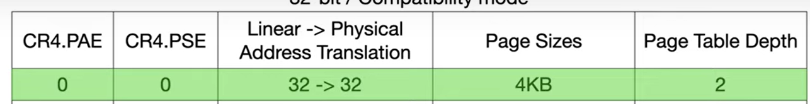

The table names and entries are as such

The process- CR3 holds a 32-bit base address to a page entry table.
- The table holds 2^10 records (10-bits) of 4-byte entries (32-bit)
- The first 10-bits of a 32-bit Linear Address (that needs translation) are index number to an enrty from the table.
- The (4 byte) table entry's 20 most significant bits are used as a base for the next table (0xXXXX'X000).
- The bottom 12 bits are assumed by the MMU to be 0.
- Beacuse the bottom 12-bits are assumed to be 0, the MMU can reuse to for various purposes.
- Also that means the bottom is 4KB aligned (0y0000'0000'0000 -> 0x000)

The process than repeats again:- Next 10-bits from the 32-bit Linear address are used as index to the second table.
- The 2nd table entry's 20 MSBits are used as a base to the 3rd part (which is a page, not a table).
- 12 bottom bits of entry assumed zero.

Finally the 3rd part is the page.- We have the page-aligend base from the 2nd table.
- The bottom 12-bit that remain from the 32-bit Linear address points to the desired location in the page (the physical address).

Summery from the intel manual